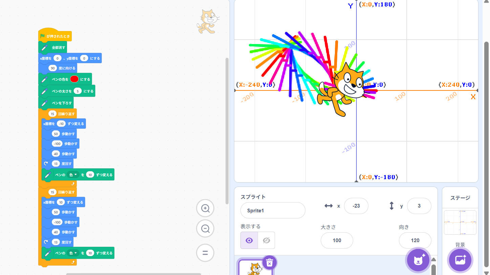
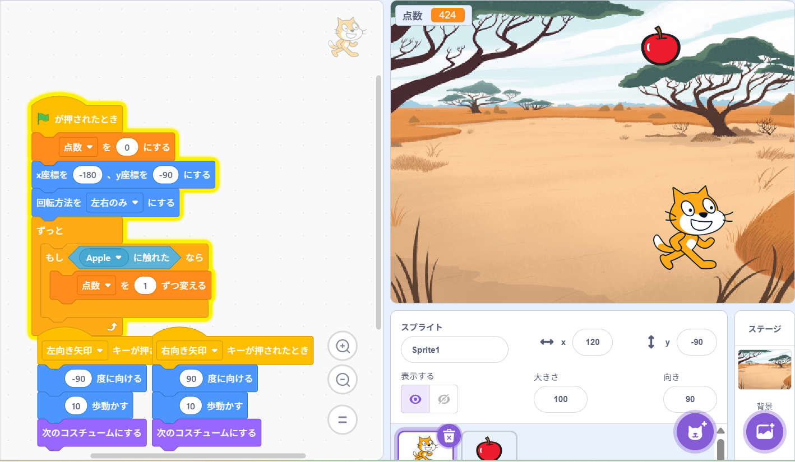

1週目のレポート ： 公大高専１年実習I-1
3a班4番 ニックネーム
第1週目
1-1 サイエンスアート

1.内容
プログラミングで猫を動かしその軌道上に線を描きプログラムに応じた規則的なサイエンスアートを作成した。
プログラムを応用して様々な形を作成することができる。
2.感想
これをこうすればこんな形ができるのではないか、と予想を立てながらプログラムを作成するのが楽しかった。
プログラムがうまくいって目標通りの形ができたときは達成感が大きかった。
1-2 ゲーム

1.内容
猫を左右に操作し落ちてくるリンゴをキャッチすると得点が増えていくゲームを作成した。
背景やオブジェクト別のプログラム作り別の動きをさせた。
2.感想
かなり単純なゲームではあるがプログラミングに触れるのはやはり楽しいと思えた。
このゲームよりさらにクオリティの高いプログラミングをしてみた糸も思った。
1-3 ホームページ作成
私のホームページ
1.内容
githubのアカウントを作って使用し自分のホームページを作成した。
githubの使い方を学びホームページの作り方を学べる。
2.感想
自分はホームページを作ったりしたことがなかったがgithubでの記号や文字の使い方などが
わかったときはなるほど！という納得感が生まれた。
各ページへのリンク
1週目のレポート
2週目のレポート
3週目のレポート
私のホームページ